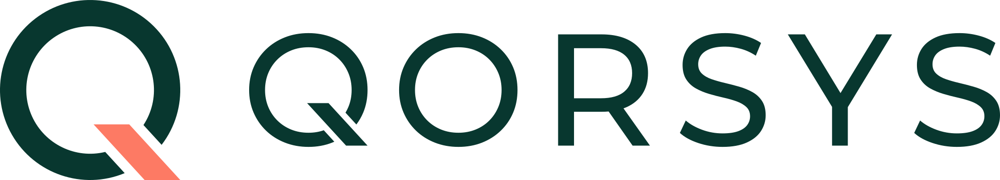
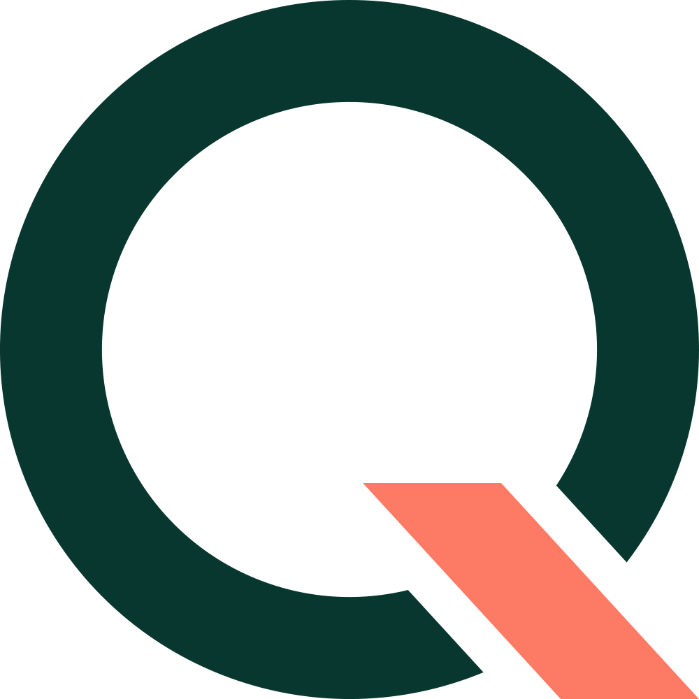
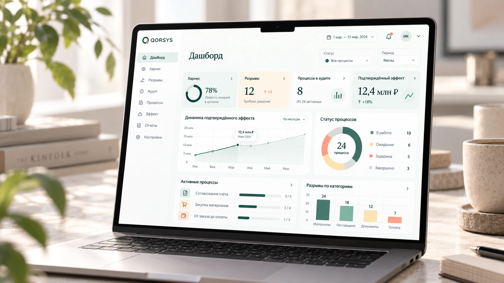

Учёт и ресурсы
1С:Бухгалтерия, 1С:ERP, 1С:УТ, 1С:ЗУП, МойСклад, Saby

Обсудить участиеНаходим потери в работе компании, помогаем их убрать и проверяем результат на данных.
Заказ принят. Счёт выставлен. Но деньги всё ещё не пришли.
Заказ проходит через 1С, CRM, почту и мессенджеры. Закупки живут на торговых площадках, движение отдельных товаров - в ЕГАИС и «Честном знаке». Между системами информация теряется, заказ ждёт, а работу приходится делать заново.
Интервью с собственником задаёт направление. Модуль аудита связывает задачи и бэклоги с цифровым следом компании: документами, событиями и передачей работы между отделами. Так мы восстанавливаем реальный процесс, находим разрывы и проверяем, какое изменение даст пользу.
Наш подсчёт по именованному списку, а не число систем в каждой компании и не полный размер рынка. 12 направлений; отдельные продукты одной семьи считаются отдельно, алиасы и протоколы не считаются. Подключения выбираем под первые пилоты - каталог не означает, что все коннекторы уже готовы.
1С:Бухгалтерия, 1С:ERP, 1С:УТ, 1С:ЗУП, МойСклад, Saby
Битрикс24, amoCRM, retailCRM, Planfix, Мегаплан, YouGile, Kaiten
Диадок, Directum RX, Docsvision, 1С-ЭДО, Астрал.ЭДО, Такском
Telegram, MAX, VK Teams, WhatsApp Business, Microsoft Teams, Slack
Яндекс 360, VK WorkMail, Exchange, Nextcloud, SharePoint, OneDrive, Google Workspace, Dropbox
СберБизнес, Т-Бизнес, Точка, Модульбанк, ЮKassa, CloudPayments, Robokassa
Яндекс Директ, Яндекс Метрика, VK Реклама, Roistat, Calltouch, Mindbox, UniSender, SendSay
Wildberries, Ozon, Яндекс Маркет, Avito, Мегамаркет
ЕИС закупки, Сбербанк-АСТ, РТС-тендер, Росэлторг, ЭТП ГПБ, ТЭК-Торг, B2B-Center, Фабрикант
ЕГАИС, Честный знак, ВетИС / Меркурий, ФГИС Зерно, ФГИС Сатурн, ГИИС ДМДК, ФГИС Лесной комплекс, Личный кабинет ФНС, Госуслуги, Электронный бюджет
СПАРК, Контур.Фокус, Seldon.Basis
1С:MES, 1С:WMS, 1С:TMS, Галактика ERP, Галактика MES, TRACE MODE, MasterSCADA
Примеры официальных источников: 1С:ERP · ЕИС · ЕГАИС · Честный знак
Ценность смещается к тем, кто умеет встроить ИИ в реальные процессы и отвечает за результат.
связать данные, системы, людей и агентов так, чтобы компания получила измеримый эффект.
Нажмите на сценарий и посмотрите, какую проблему помогает разобрать QORSYS.

КОРСИС / ОБЗОР ПРОЦЕССАДемонстрационный примерСемь этапов, две задержки.
5 дней ожидания / 14 дней всего
Каждый этап даёт отдельный результат. Следующий шаг нужен, только если предыдущий подтвердил его смысл. Так мы снижаем риски и приходим к измеримому эффекту.
Пять понятных шагов, каждый с конкретным результатом. Клиент всегда видит, на каком этапе находится работа и какой эффект уже получен.
Клиент оплачивает проверку данных и возможности измерить процесс.
Клиент платит за согласованное улучшение процесса.
Регулярная оплата за работу системы и сохранение эффекта.
От данных
к результату
Аудит связывает документы, задачи и события из систем компании. Восстанавливаем процесс и находим подтверждённые задержки и разрывы.
Перестраиваем выбранный процесс и подключаем адаптированных агентов. Харнесс задаёт порядок исполнения, границы полномочий и согласования.
Сравниваем показатели до и после изменения, проверяем денежный эффект и следим, чтобы результат сохранялся.
Используем уже настроенные подключения, данные и управляющий слой для нового процесса. Проверяем, снижает ли это стоимость внедрения и приносит ли повторную выручку.
Первый рынок - компании России с повторяемыми процессами и цифровым учётом. ЕАЭС - следующее направление после проверки модели.
Заказы, согласования, отгрузки и поступление оплаты.
Закупки, снабжение и передача работы между отделами.
Обращения, исполнение и соблюдение сроков.
По данным команды: растущий бизнес со штатом 100–500 человек, цифровыми системами и признаками проблем в операционной работе. Технологическую готовность и конкретную потребность подтверждаем при отборе пилота.
Проведены переговоры и обсуждена граница первых работ. Следующий шаг - согласовать процесс, доступы, показатели и условия запуска.
Переговоры · информация команды
Подготовленные материалы снижают время старта. Они ещё не доказывают спрос и прибыльность бизнеса.
Разработки существуют отдельно. Агентный слой и харнесс сводятся в единый продукт. Полный цикл аудита, исполнения и подтверждения эффекта предстоит проверить в пилоте.
Реальные клиентские результаты и выручка в предоставленных источниках не подтверждены.
Предлагаемый план после начала финансирования. Переход к следующему этапу зависит от результата предыдущего.
Провести интервью, выбрать первый процесс и проверить готовность данных.
Провести диагностику и согласовать одно ограниченное изменение.
Измерить эффект, проверить спрос на контроль и начать следующий процесс.
QORSYS может оказаться хорошим проектным бизнесом по диагностике и внедрению, но не масштабируемым программным продуктом. Подписка и экономика второго процесса должны показать разницу.
Ищем партнёра для перехода от подготовленной основы к первым клиентам и повторяемой модели продаж.
Обсудить условияПредложение для обсуждения.
Окончательные условия фиксируются в документах сделки.
Расчёт из суммы и доли. Это предлагаемая оценка, а не подтверждённая рыночная стоимость.
Калькулятор по финальной модели v1.5. Сценарии показывают чувствительность к продажам и удержанию, а не обещают доходность.
отношение расчётной стоимости доли к вложенным 15 млн ₽; после двух будущих раундов
| Показатель | Год 1 | Год 2 | Год 3 |
|---|---|---|---|
| Внедрения + подписка | 66,7 млн ₽ | 161,1 млн ₽ | 307,3 млн ₽ |
Это расчётная стоимость доли, а не деньги к получению. Продажа доли и дивиденды зависят от результатов бизнеса и условий сделки. Дробное число клиентов - среднее значение в сценарной модели.
| Показатель | Год 1 | Год 2 | Год 3 |
|---|---|---|---|
| Операционная прибыль | −10,6 млн ₽ | 50,4 млн ₽ | 157,8 млн ₽ |
| Деньги на конец года | 2,4 млн ₽ | 48,0 млн ₽ | 196,5 млн ₽ |
Разрабатываем рабочую версию и готовим к запуску.
Запускаем у первых клиентов и подтверждаем ценность.
Масштабируем и повторяем модель.
Как распределяются средства
Работа с рынком, клиентами, партнёрами и инвестиционным предложением.
Архитектура, интеграции и создание рабочего контура QORSYS.
На входе требуется работа с конкретным клиентом. Программный продукт должен сохранять результат, контролировать процесс и удешевлять следующее подключение. Пока повторяемость не доказана, мы рассматриваем её как ключевую гипотезу бизнеса.
За постоянную полезную работу: отслеживание задержек, ухудшения сроков и возврата старых проблем. Если после первого изменения контроль не приносит ценности, оснований для подписки нет.
CRM и 1С учитывают отдельные части работы. QORSYS должен связать события между системами, показать потерю в процессе и проверить эффект изменения. Существующие системы продолжают выполнять свои задачи.
В предоставленных материалах нет подтверждённых результатов внешнего клиентского пилота. Поэтому сайт не обещает процент экономии или срок окупаемости. Пример выше использует учебные данные.
Предлагаемая архитектура предусматривает работу в согласованном контуре клиента, минимальные права и чтение данных на этапе диагностики. Доступы, хранение и использование моделей проверяются для каждого пилота. Само описание архитектуры не заменяет проверку безопасности.
Срок возврата и доходность сейчас не подтверждены. Экономика инвестора зависит от реальных продаж, расходов и договорённостей о дивидендах или продаже доли. Эти сценарии нужно согласовать на основе финансовой модели до сделки.